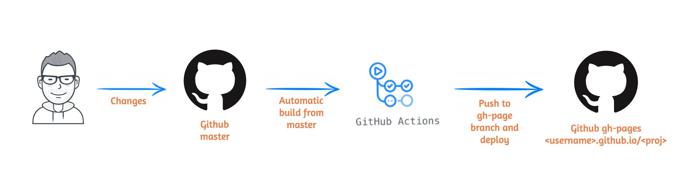
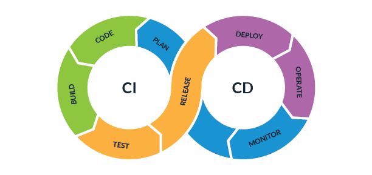

GITHUB ACTIONS

Examples of using
What is YAML?
YAML is a human-readable data-serialization language. It is commonly used for configuration files and in applications where data is being stored or transmitted.
Syntax Example
# Employee records
- Employee one: ||
name: Alex || ||
job: Developer || => depth 1 ||
skills: || || => BLOCK 1
- python || ||
- C/C++ || => depth 2 ||
- pascal || ||
- Employee two: ||
name: Bob || ||
job: Tester || => depth 1 ||
skills: || || => BLOCK 2
- lisp || ||
- fortran || => depth 2 ||
- REST APIs || ||
CI/CD
What is CI/CD

CI/CD is a method to frequently deliver apps to customers by introducing automation into the stages of continuous delivery, and continuous deployment. Specifically, CI/CD introduces ongoing automation and continuous monitoring throughout the lifecycle of apps
Continuous delivery automates the release of that validated code to a repository. At the end of that process, the operations team is able to deploy an app to production quickly and easily.
Continuous deployment automates releasing an app to production. In practice, continuous deployment means that a developer’s change to a cloud application could go live within minutes of writing it (assuming it passes automated testing).
Workflow basics components:
Example workflow
name: test-workflow
on: [workflow_dispatch]
jobs:
test:
runs-on: ubuntu-latest
steps:
- name: print Hello GITHUB
run: echo Hello GITHUB
Dependencies
By default, the jobs in your workflow all run in parallel at the same time. If you have a job that must only run after another job has completed, you can use the needs keyword to create this dependency. If one of the jobs fails, all dependent jobs are skipped;
name: test-workflow
on: [workflow_dispatch]
jobs:
test:
runs-on: ubuntu-latest
steps:
- name: print Hello GITHUB
run: echo Hello GITHUB
Events
A workflow is a configurable automated process that will run one or more jobs. Workflows are defined by a YAML file checked in to your repository and will run when triggered by an event in your repository, or they can be triggered manually, or at a defined schedule.
More about triggering and events
on:
pull_request:
types: [opened, reopened]
jobs:
specific_review_requested:
runs-on: ubuntu-latest
steps:
- run: echo 'A review from octo-team was requested'
Artifacts
Artifacts allow you to persist data after a job has completed, and share that data with another job in the same workflow. An artifact is a file or collection of files produced during a workflow run. For example, you can use artifacts to save your build and test output after a workflow run has ended.
More about artifacts
name: Node CI
on: [push]
jobs:
build_and_test:
runs-on: ubuntu-latest
steps:
- name: Checkout repository
uses: actions/checkout@v3
- name: npm install, build, and test
run: |
npm install
npm run build --if-present
npm test
- name: Archive production artifacts
uses: actions/upload-artifact@v3
with:
name: dist-without-markdown
path: |
dist
!dist/**/*.md